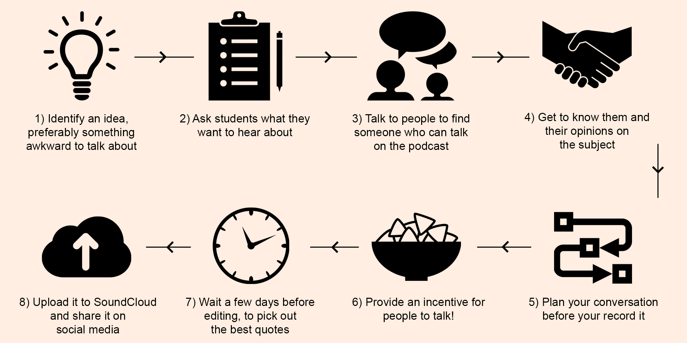

Communication sophomore Alaina McCaffrey at the Nine Lives live event last month / Photo by Helen Lee
Podcasting - NU and Beyond
In wake of the national success of Serial and other podcasts, Northwestern's own have popped up.
By Alekya Rajanala
"We are living in a golden age of podcasting," said Dr. Neil Verma, a visiting assistant professor in the School of Communication and the author of an award-winning book on radio drama, called Theater of the Mind: Imagination, Aesthetics, and American Radio Drama. Verma teaches an RTVF course called Podcasting and New Audio, in which he discusses with his students the evolution of the podcast from a number of potential disciplines, from radio drama to the documentary.
"Because no critical tradition has its hooks into the medium of the podcast, and I have a background studying auditory narrative on different scales, I thought it would be an interesting project to create a class that tries to invent the podcast," Verma said.
Oral storytelling is a time-honored tradition that, within the last few years, crawled back into the spotlight. This trend is certainly visible in the city of Chicago, as can be seen with the rising popularity of podcasts such as This American Life, The Moth and Serial.
Our goal is to share a side of Northwestern that isn't visible at first glance. – Alaina McCaffrey
A testament to that popularity exists at NU in the form of Nine Lives, a fledgling podcast that shares authentic stories of NU students. Communication sophomore Alaina McCaffrey, founder of Nine Lives, hopes that Nine Lives will provide students with a niche to have their own storytelling experience.
The podcast group began in January 2015 and has since grown to include 10 members. Each episode shares unaltered anecdotal stories that relate to theme of that episode. Usually the team "crowdsources" for stories by reaching out to people they know, but recently, they have experimented with a new approach – gathering stories in places where stories are naturally told. Group members camp out in dining halls, Norris or the sidewalk by Sheridan.
"Our goal is to share a side of Northwestern that isn't visible at first glance," McCaffrey said. She and the team decided on the name "Nine Lives" in order to reflect the various "lives" of every NU student, many of which typically go unseen. The podcast has touched upon the serious and lighthearted, from mental health issues at NU to funny memories from a quarter abroad.
For Medill/Bienen sophomore Manon Blackman, a Nine Lives team member, one of their most memorable episodes was themed "Under the Influence," for which the team collected brief clips from students all over campus.
"We featured one particularly raunchy story about a hookup on a yacht formal that was an absolute riot to hear and was just outrageous," Blackman said. "It definitely stood out as one of the craziest stories we've heard on Nine Lives."
In addition to sharing stories from their latest drunken escapades in "Under the Influence," students also shared memories of moments when their emotions–positive or negative–might have influenced their actions. Approaching strangers to gather this information forces the team to go out of their comfort zones, but the stories they discover are worth it, according to Blackman.
"The spontaneous nature of the storytelling makes Nine Lives different from a lot of other podcasts, which often are very regimented and less flexibly structured," Blackman said. "Rather than having our contributors share one story after another, we try to mix up our format by incorporating spur-of-the-moment stories from the average person on the street."
The group hopes to experiment with new forms of media in the near future; in the pipeline are plans for a live show with nine contributors, incorporating new and returning voices from the NU community.
Nine Lives has changed dramatically from the release of its first episode to its most recent, fourth episode; they tried interactive reporting, worked with less traditional themes and experimented with sound by mixing song clips into stories. Members view these changes as a constant, ongoing process.
"I think the nature of podcasting is to evolve," McCaffrey said. "With each episode we release, we're breaking out of our shell and moving towards our goal of building a community and inspiring others to share their own stories."
For Medill senior Timothyna Duncan, audio storytelling was the perfect medium to start difficult conversations in informal settings. She debuted WildTalks last winter, and created four podcasts over the course of two quarters, tackling issues from microagressions, mental health and the LGB dating scene on campus.
LISTEN HERE
Northwestern alum Peter Cleary (left) appeared on Duncan's WildTalks episode on NU's LBG dating scene that aired on March 1, 2015. Hear what they had to say about campus podcasting.
Click here for transcript.
Duncan: WildTalks was basically a platform where Northwestern students could share their honest thoughts about pressing issues on campus. How I described it then, and how I also see it now is a platform to address the awkwardness and the awkward topics that we don't like talking about–or, prefer talking about on social media and not in person.
Cleary: My experience podcasting with Timo [Duncan] was just the one WildTalks about being LGBT on campus–LGB, rather, not T ... I had a great time, I didn't really know what to expect going into it because I had yet to listen to an episode of it. Following that, I went and recorded a couple of episodes for a podcast for fun, with my friend Jackie, so that was really great. I thought it was a cool first step into the podcast pool.
Cleary: My advice to people thinking of making their own podcasts is probably ... be prepared to suck the first couple of episodes and know that your voice is going to sound super weird, but just have a lot of fun with it. Oh, and make sure you're talking about something you actually care about, because it shows if you're not.
Duncan: A podcast is just such a great way to have an honest conversation, and secondly, it takes a lot of work and investment to set up a video and have the right lighting and it takes away from the actual conversation. Once you have a podcast, you literally don't have to do much! You just have to go to a room–Medill has given you microphones you can use–just give your guests some snacks and all you have to do is talk, and it's all about the conversation.
The Sheridan Walk, a comedy advice podcast created by Weinberg seniors Mitchell Caminer and Andrew Zessar, is Northwestern's newest podcast. Its first episode was released mid-October.
This episode, entitled "Freshman Mailbag," was inspired by the comedy duo Jake and Amir, whose popular podcast centers on giving advice in response to questions from listeners. "We posted on social media asking people to send us suggestions on common problems that freshmen at Northwestern might have. We read the questions on the podcast and answered them advice-column style," Caminer said.
The second episode will be themed "Interviews," as a way of satirizing the job recruitment that seniors are currently knee-deep in as well as the competitive nature of Northwestern's club application process. It will feature a guest contributor, who Caminer and Zessar think will spark some interesting unscripted banter.
"One thing the two of us have discussed is: how much should we go off-the-cuff versus how much should we prepare? We're playing with that balance right now," Caminer said.
The name The Sheridan Walk is a nod to a unique feature of the podcast–Caminer and Zessar recorded it while walking on Sheridan Road.
"The idea is that people can listen to us even if they have only a few minutes here and there during the day, maybe as they're walking on Sheridan in between classes," said Zessar.
Verma recognizes this: most people tend to listen to podcasts in moments of boredom. He counters this notion by pushing his students to learn to listen against the grain. Verma hopes that his course teaches his students not only about podcasts and how to create them, but also how to listen to them.
"The podcast is a relatively new medium and there is a ton of really interesting material being produced unlike anything ever created with sound before," Communication sophomore Eli Sugerman, a student in Verma's course, said. "It's been pretty rewarding to be some of the first to analyze this new medium in a critical fashion."
Stories in print don't quite envelop the reader in the same way that oral, unscripted storytelling does ... Hearing the inflections in a person's voice adds a new layer of experience. – Manon Blackman
Like the team from Nine Lives, Verma is intrigued by the emphasis that the podcast places on "storytelling." One section of his course specifically focuses on the aesthetic of the narrative form and how the podcast is used as a venue to tell stories.
Verma's fascination with the art of sound began years ago, when his second grade teacher read to the class the children's fantasy book Jacob Two Two and the Hooded Fang. Verma said he could easily recall an incredibly vivid memory of the book being read to him.
"It wasn't even what the book was about; rather, it was all in the process," Verma said. "I think that's what people like about audio: the engagement with the auditory storytelling, the give-and-take of being providing some information and providing the rest through your imagination. There's a subtle dance there, and my first memory of that is during story-time in the second grade."
Echoing this, Blackman attested to the unique power of audio storytelling through her experience with Nine Lives.
Want more? Click here to find out how a WildTalks episode is created!
"Stories in print don't quite envelop the reader in the same way that oral, unscripted storytelling does," Blackman said. "Hearing the inflections in a person's voice adds a new layer of experience."
How to make a WildTalks podcast episode

Icons by Rflor, Arthur Shlain, Catherine Please, Nicolas Vicent, Takao Umehara, Sandra M, Myles McCoy, Rudy Jaspers, Brennan Novak, Edward Boatman / From Noun Project